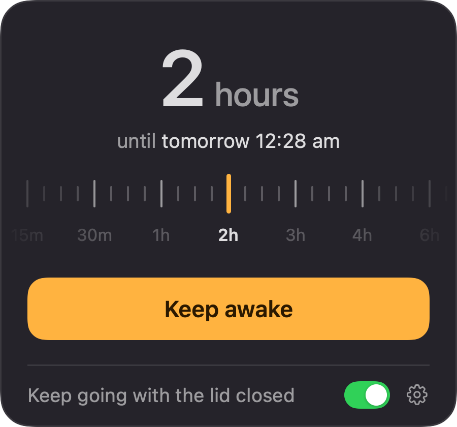
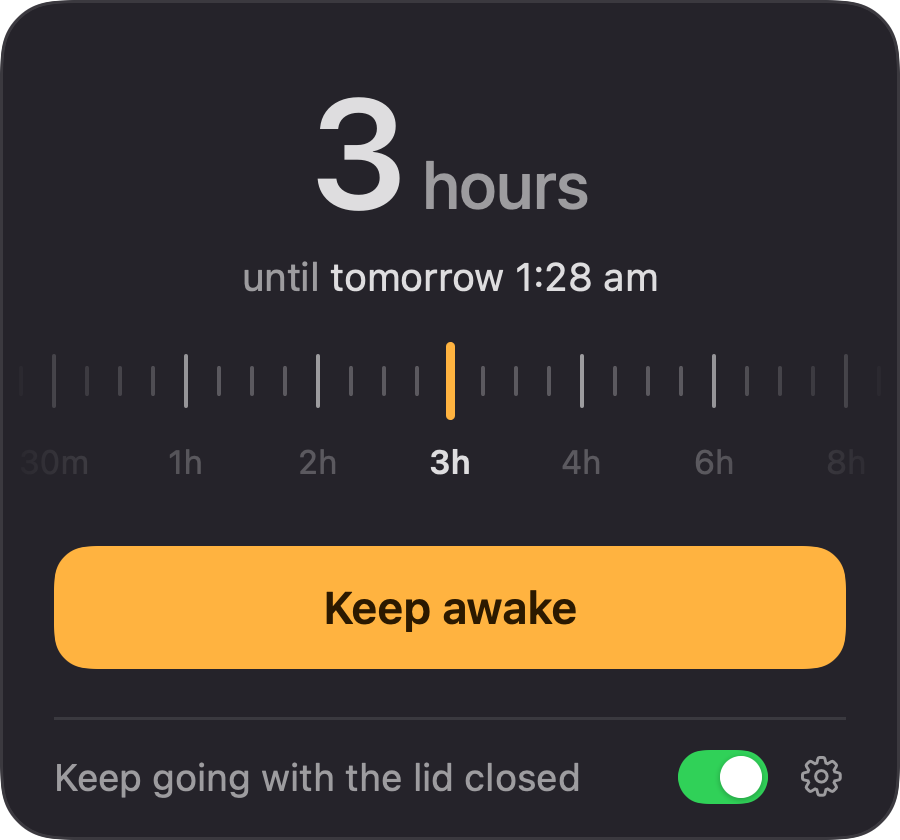
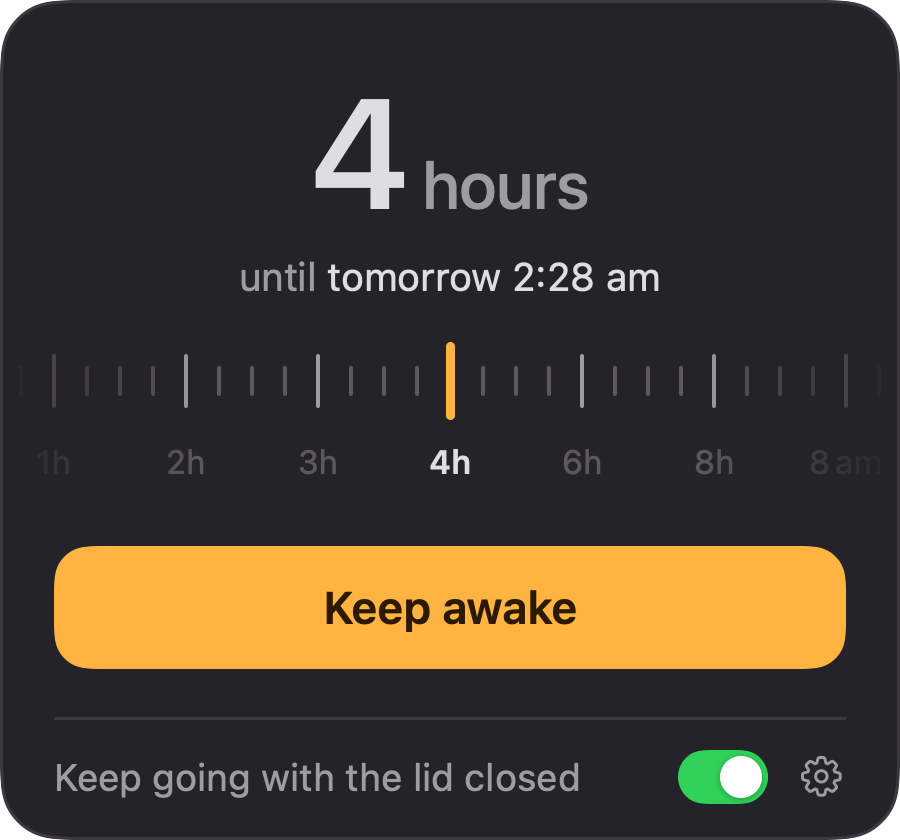
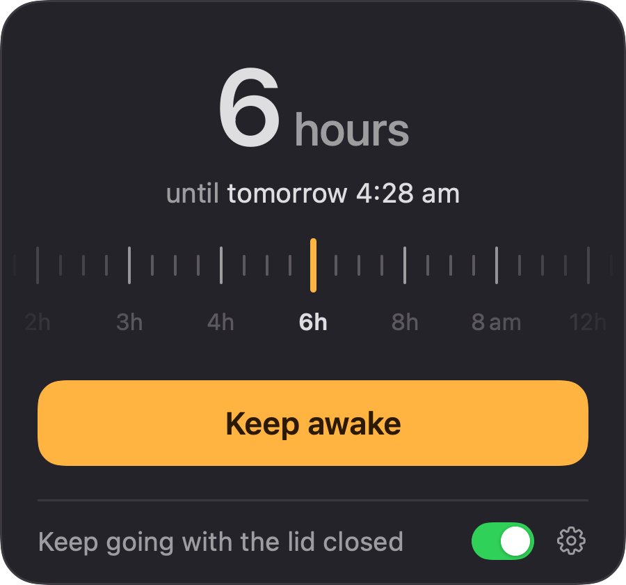
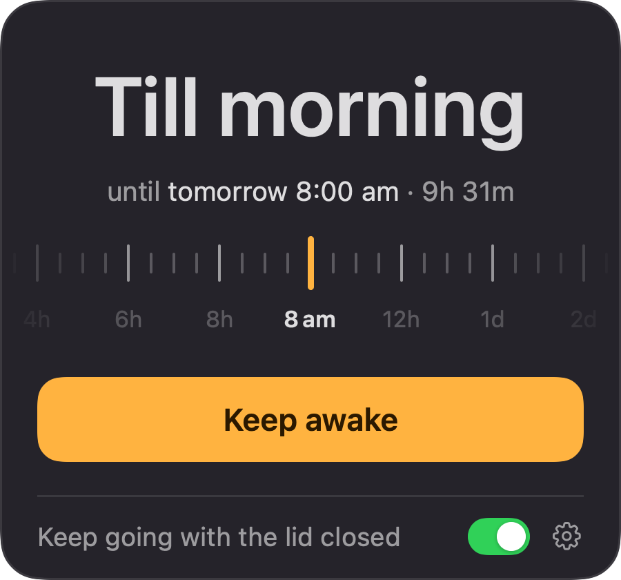

Uploading launch-film-final.mov
34% · 6.8 GB of 20 GB
Upload stopped at 41%
9:31
·
Upload 41%






Your Mac is halfway through something.
Close the lid and it all stops.
Wink keeps it awake.
Pick how long. Morning is one drag away.
Close the lid. It keeps going.
At 8 am, your Mac sleeps normally again.
Wink
Free and open source, for macOS
github.com/pavan-parallel/wink